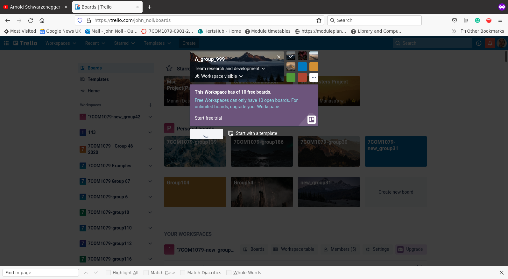
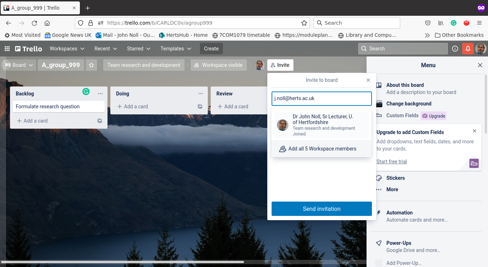
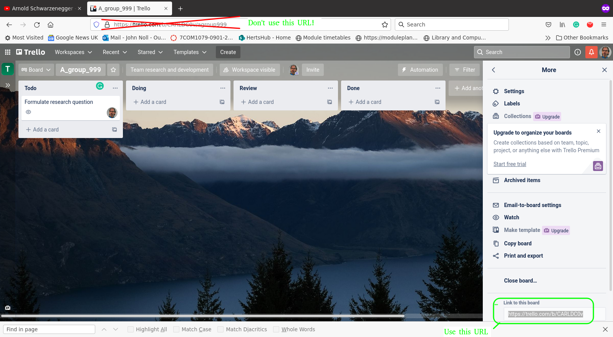
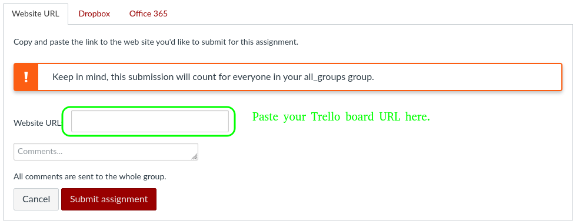

Project Plan
5COM2006 - Design and Configuration Project
CAUTION
If you don't set your identities on Git and Trello correctly, your contribution will not be recorded.
Set your Git
user.emailproperty to yourherts.ac.ukemail address, and youruser.emailproperty to your name:git config --global user.email st23abc@hert.ac.uk
git config --global user.name "Stig Tracy"Set your Trello "display name" to your Herts login ID (the part of your email address before the ‘@').
Create a Group trello board.
Elect a member of your group to be the Trello board host.
Create a Trello board using that person's Trello account. Name your board "groupNN" where "NN" is the number of your group.

Create four lists (columns) called:
- Backlog
- Doing
- Review
- Done

Invite s.f.pratama@herts.ac.uk to join the Trello board.

Invite each member of your group to join the Trello board in the same way.
Create a Project Plan
Now you have a group Trello boards.
How do you figure out what cards to create?
Identify tasks
The coursework specification already enumerates the deliverables:
- Group formation.
- GitHub repository and Trello board.
- Project plan.
- Five forces analysis.
- Use cases.
- Sequence diagrams.
- ER diagram
There are also individual elements (process, peer evaluation, quizzes).
Initial Work Breakdown Structure (WBS)
We can organize these deliverables into an initial Work Breakdown Structure (WBS):
Refined WBS
This WBS is too coarse however: the deliverables are too big and involve multiple things.
Each task needs to be something one person can do in less than a week.
So, we need to elaborate the WBS by "breaking down" these deliverables into smaller ones.
We do this using noun phrase identification.
Refined WBS, cont.
To do this, identify the nouns in the deliverable description (this is called noun phrase identification):
- Group
- Trello board
- Git repository
- Project plan
- Five forces analysis
- Use cases
- Sequence diagrams
- ER diagram
Refined WBS, cont.
This yields the next level of decomposition:
The other components can be elaborated after the corresponding lectures.
Identifying Tasks
The leaves of this WBS identify deliverables: these are the nouns ("What") of your project.
Deliverables are produced by tasks: these are the verbs ("How") of your project.
Never, EVER create tasks that don't have deliverables! Tasks that don't produce anything are wasted effort.
Tasks are performed by group members: these are the "Who" of your project.
Identifying Tasks, cont.
Tasks are described by verb phrases that convey what needs to be done to produce the corresponding deliverable:
| Deliverable | Task |
|---|---|
| Group | Form group |
| Trello board | Create Trello board |
| Git repository | Create Git repository |
| Project plan | Create project plan |
| Rivalry between existing competitors | Analyze rivalry between existing competitors |
| Threat of new entrants | Analyze threat of new entrants |
| Threat of substitute products | Analyze threat of substitute products |
| Bargaining power of customers | Analyze bargaining power of customers |
| Bargaining power of suppliers | Analyze bargaining power of suppliers |
| Use cases | Write use cases |
| Sequence diagrams | Create sequence diagrams |
| ER diagram | Draw ER diagram |
Create Task Cards
- Each task gets one and only one card.
- Add task cards to the Backlog column.
- No duplicate cards are allowed!
- Never, EVER create task cards that don't have a deliverable.
Name the Cards with Verb Phrases
Write a Meaningful Description
Assign Responsible Parties
Rules:
- Every (task) card needs a member.
- Only one member per card!
- That person is responsible for ensuring the task is finished.
- The responsible party does not have to perform the task: he or she can delegate to another group member.
Do a task!
When the responsible party (or the person assigned by the responsible party) is ready to perform a task, he or she moves it to the "Doing" column:
Review "done" tasks, cont.
Review "done" tasks
When the responsible party thinks the task is "done," he or she should:
Move the card to the "Review" column.
Add someone to be the reviewer.
The reviewer needs to check the task deliverables to be sure they are actually Done:
- Read text documents to be sure they make sense, are spelled correctly, and use correct grammar.
- Check YAML files using
validate_yaml.R. - Test R scripts using Rscript from the command line.
If the deliverable passes all the checks, the reviewer should move the card to the "Done" column.
If the deliverable does not pass all the checks, the reviewer should move the card to the "Doing" column. Trello will notify the responsible party via email.
Done!
Submit your Trello board URL.
Copy your Trello board URL.
To find the board URL, open the "three dot" menu on the far right, under your avatar, then click "More..." The text box under "Link to this board" contains the URL for your board.

Do NOT copy the URL from your browser's URL textbox; this is not correct.
Paste your Trello board URL into the assignment submission box on Canvas:

Note: Canvas will try to display this URL, which it won't be able to do if your board is private (which is OK). Don't worry, just be sure you submitted the correct URL, by copying it from Canvas to your browser.
Verify your URL!
Someone other than the submitter should copy the URL from Canvas to a web browser to be sure the submitter submitted the correct URL.
You should submit one and only one Trello board URL: it should be the URL of the board you are using to manage your project plan.
Summary
Create a group board.
Add four columns:
- Backlog
- Doing
- Review
- Done
Create a work breakdown structure.
Create exactly one card per leaf in the WBS.
Add exactly one member to a card.
Submit the correct URL.
Notes
- At the end of this exercise, you should have some completed tasks.
- The responsible party does not necessisarily have to do the task; he or she simply ensuress the task gets done, either by doing it or by recruiting other group members to do it.
- Submit the correct URL. It should be the URL for your board, copied from the "Link to this board" box in the "More..." section of the Menu (not from the browser URL box!).